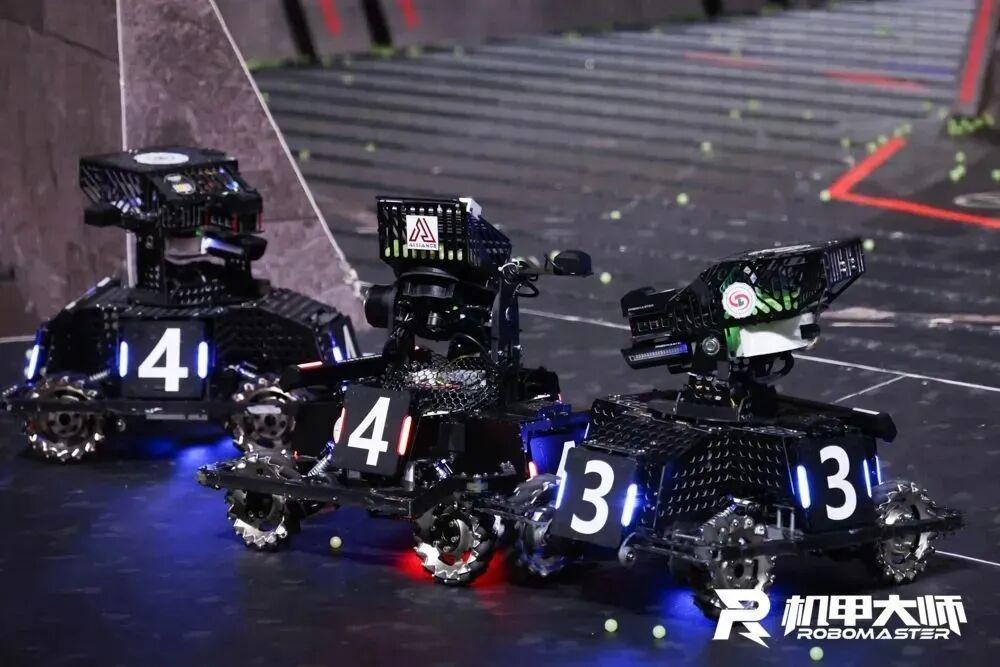
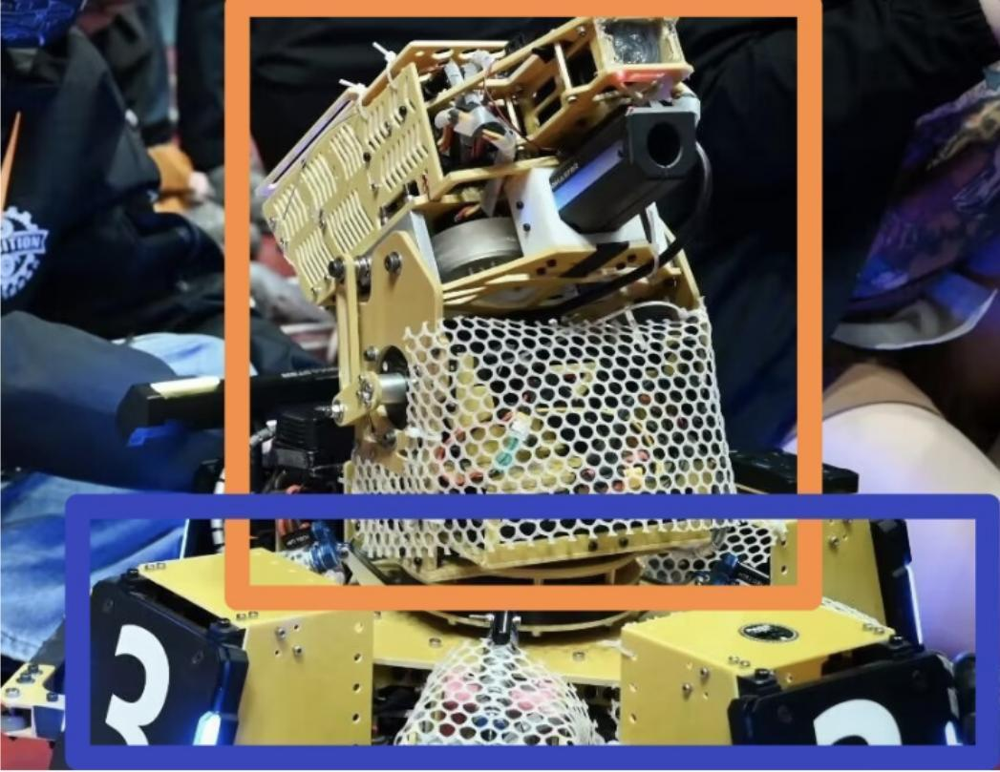
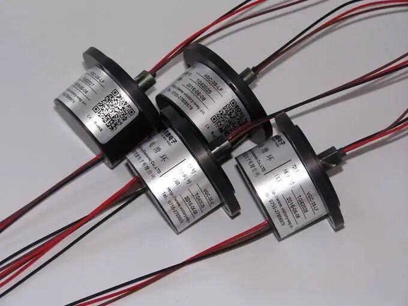
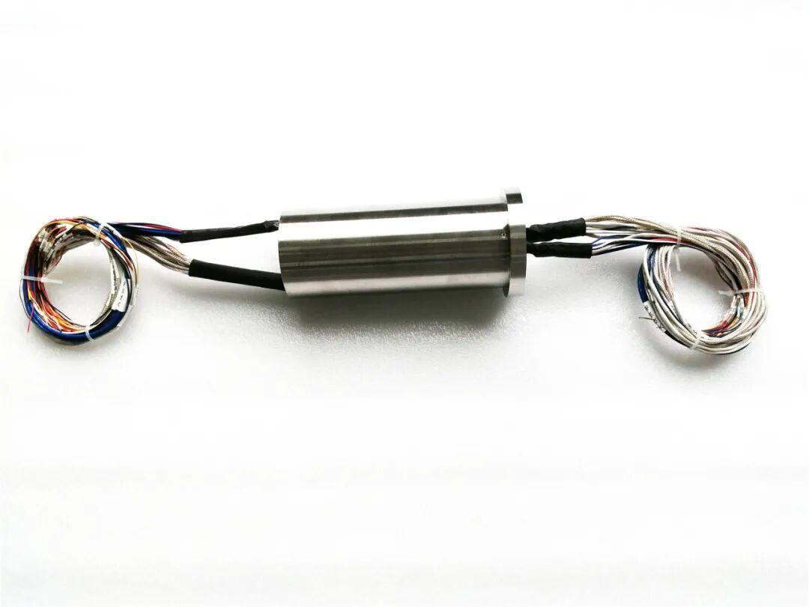
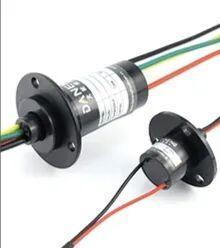
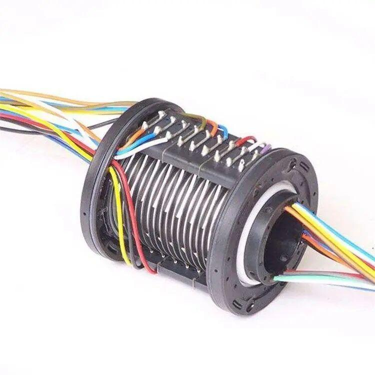
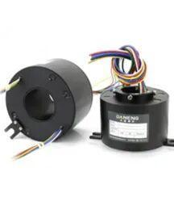
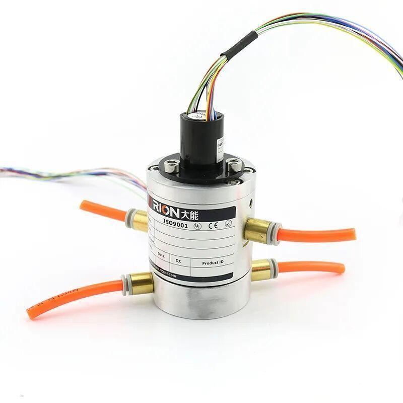
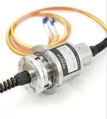
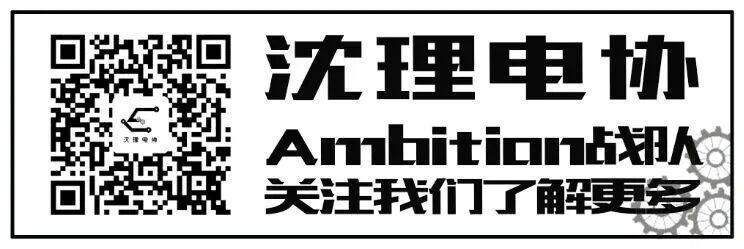

使用小程序

在现代工业和科技领域中，许多设备需要在旋转的同时进行电力和信号的传输。例如，在RoboMaster的比赛中，机器人需要360度无死角的侦查和攻击，来做到随时迎接对手的攻势。在这种情况下，电滑环就成为了不可或缺的关键组件。
Part.1
机器人构造简单概述
机器人整体分为底盘和云台两个部分。底盘提供移动功能并为机器人提供支撑稳定，上面的云台则是装载开发板、工业相机、发射机构等重要部件。为了让机器人行动自如，需要使用电滑环来连接机器人的上下部分。

电滑环一边连接底盘上的电源和其他通讯线，另一边连在云台上的各种设备，比如机器人的电机和开发都需要连接在电滑环上。当电滑环旋转时，电刷或接触点会在环的内表面上滑动，以保持电气连接的连续性。这种滑动接触可以在环的整个旋转过程中保持稳定的电气连接，从而允许无限旋转。
Part.2
电滑环是什么
电滑环是一种可旋转的机械部件，用于将电力和信号从固定位置传输到旋转位置。它通常由导电环、电刷、轴承和外壳组成。导电环安装在旋转轴上，电刷与导电环接触，通过摩擦传输电力和信号。


Part.3
电滑环的功能和作用
电滑环的主要功能是在旋转部件和固定部件之间传输电力和信号，同时保持电力和信号的稳定传输。这使得电滑环成为许多需要旋转传输电力和信号的设备中不可或缺的组成部分。


电滑环的作用包括：
1. 实现 360 度无限制旋转：电滑环可以实现设备在旋转过程中进行电力和信号的传输，避免了传统的电线缠绕和摩擦问题。
2. 提高设备可靠性：电滑环能够减少电线的振动和疲劳，提高设备的可靠性和稳定性。
3. 传输多种信号：电滑环可以传输各种类型的信号，如模拟信号、数字信号、以太网信号等。
4. 适应恶劣环境：电滑环具有良好的防尘、防水、耐腐蚀等性能，能够适应恶劣的工作环境。
Part.4
电滑环的应用
电滑环广泛应用于各种需要旋转传输电力和信号的设备中，如工业机器人、风力发电机、卷取机、舞台灯光设备等。它们在提高设备性能和可靠性方面发挥着重要作用，成为许多设备中不可或缺的组成部分。



电滑环的存在使得小车能够在无限旋转的同时保持电力和信号的传输，这是小车能够实现无限旋转的秘密所在。电滑环的可靠性和稳定性对于小车的正常运行至关重要，它为小车的无限旋转提供了坚实的技术支持。
封面 | 白汽水
图片 | 白汽水
文字 | 白汽水
